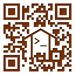

[more photos: fosscomm2011 album]
[more photos: fosscomm2011 album]
A great fosscomm (the annual greek foss community conference) took place the weekend at Patra. The organizing committee did a fantastic job, but besides that it seems that the Greek FOSS community has raised the bar of quality holding some very interesting technical presentations.
I think that fosscomm has transformed from a communities presentation conference to a community gathering/socializing/ideas-exchanging conference. And that's a good thing.
I had the chance to hold or participate on five presentations/workshops. Three of them were part of the Fedora Activity Day.
- How to make money from Open-Source (along with Evaggelos Balaskas)
- Hackerspace.gr (along with other hackerspace.gr members)
- Surviving with Gnome 3 (along with Pierros Papadeas)
- Greek Edu: Building your own Fedora Remix (along with Christos Bacharakis)
- RPM Packaging workshop
And for those of you who attended fosscomm and wondering what was this strange qr code all over the conference places... just scan it ;)

Share:
 diaspora*
diaspora*
diaspora*